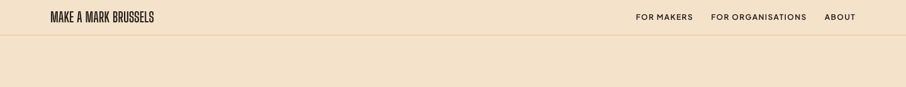
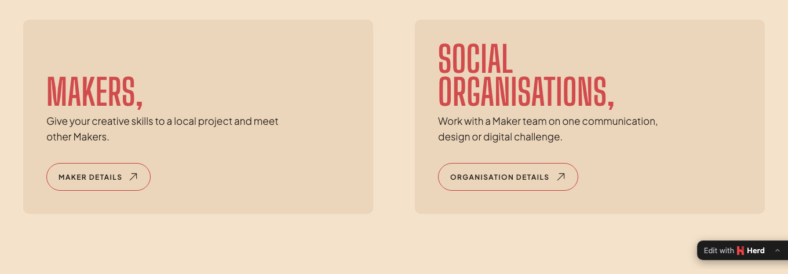
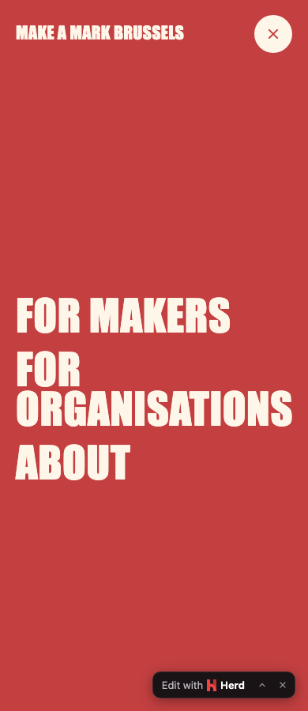
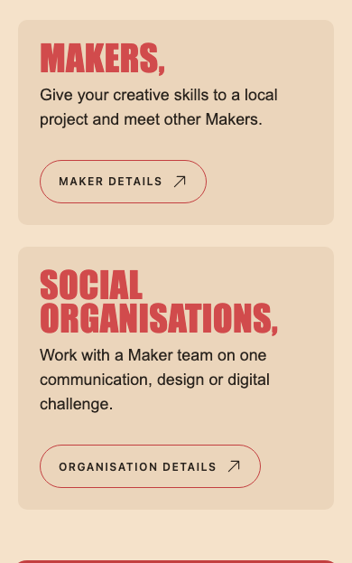
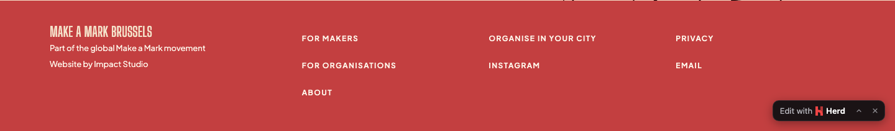

The site gets a third audience page, /volunteers, next to Makers and organisations. Most of it is already decided by V-01 to V-10. Four placement choices are still open; pick one per question below and queue it.
/
/#about/makers + form/organisations + form/volunteers + form new
/volunteers/apply → redirects to /volunteers#application/privacy names volunteers in stage 3| URL | /volunteers, form embedded at #application V-01 |
|---|---|
| Title | For volunteers · Make a Mark Brussels |
| Description | Photograph, film or run social media for the Make a Mark Brussels 2027 edition. |
| Purpose | Find a photographer, a videographer and a social media manager for the day. Explain each role, what volunteers commit to and how they differ from Makers (no team, no brief). Host the form. |
| Applications closed | Same as the other two pages: while the edition is preparing, "Applications open soon" and the Instagram follow link, no form. |
| Links out | Privacy notice · Makers page ("Want to work on a challenge in a team?") · Instagram · contact email |
| XML sitemap | Add /volunteers to /sitemap-0.xml |
Captured from the running site (main, 8cf63b9) on 7 November.





Mocks use the site's colours and type, at reduced scale. They show placement, not final styling; the wireframe comes in stage 2.
None of these blocks the sitemap. Each would change something later.
If those roles are already filled, the page mostly recruits a social media manager. The description, the homepage line and the role list would narrow. The build keeps roles in one catalogue so a role can be hidden without touching the page.
No structural change. Could add one line on /volunteers and a note in the volunteer agreement.
No sitemap change. Would add a field to the form in stage 2.
Queue one answer per question, then press Send to Agent. Or comment on anything in this page. I save the result to docs/ux/_structure.md and record your approval in docs/raw and the wiki before starting the wireframe.